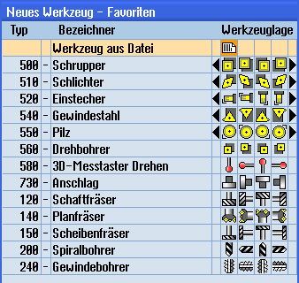

Wenn in den Einstellungen zur Werkzeugliste die Option "Werkzeug in/aus Datei zulassen" aktiviert ist, steht in der Favoritenliste ein zusätzlicher Eintrag zur Verfügung.

Neues Werkzeug aus Datei in der Liste der Favoriten
Neues Werkzeug aus Datei anlegen
 | 1. | Die Werkzeugliste ist geöffnet. |
| | 2. | Positionieren Sie den Cursor in der Werkzeugliste an die Position, an der das Werkzeug angelegt werden soll. Sie können dabei einen leeren Magazinplatz oder auch den NC-Werkzeugspeicher außerhalb des Magazins wählen. Im Bereich des NC-Werkzeugspeichers können Sie den Cursor auch auf ein vorhandenes Werkzeug setzen. Die Daten des angezeigten Werkzeugs werden nicht überschrieben. |
 | 3. | Drücken Sie den Softkey "Neues Werkzeug". |
| | | Das Fenster "Neues Werkzeug – Favoriten" wird geöffnet. |
 | 4. | Positionieren Sie den Cursor auf den Eintrag "Werkzeug aus Datei" und drücken Sie den Softkey "OK". Das Fenster "Werkzeugdaten laden" wird geöffnet. |
| | 5. | Navigieren Sie zu der gewünschten Datei und drücken Sie den Softkey "OK". Die Daten des Werkzeugs werden aus der Datei gelesen und im Fenster "Neues Werkzeug aus Datei" mit Werkzeugtyp, Werkzeugnamen und evtl. mit bestimmten Parametern angezeigt. |
| | 6. | Drücken Sie den Softkey "OK". Das Werkzeug wird mit dem vorgegebenen Namen in die Werkzeugliste übernommen. Befindet sich der Cursor in der Werkzeugliste auf einem leeren Magazinplatz, wird das Werkzeug auf diesen Magazinplatz beladen. |
Der Ablauf des Werkzeuganlegens kann anders eingestellt sein.
Werkzeug in Datei entladen
| | 1. | Die Werkzeugliste ist geöffnet. |
 | 2. | Positionieren Sie den Cursor auf das Werkzeug, das Sie aus dem Magazin entladen wollen, und drücken Sie die Softkeys "Entladen" und "In Datei". |
| | 3. | Navigieren Sie zum gewünschten Verzeichnis und drücken Sie den Softkey "OK". |
| | 4. | Geben Sie im Feld "Name" den gewünschten Dateinamen ein und drücken Sie den Softkey "OK". Das Feld ist mit dem Werkzeugnamen vorbelegt. Das Werkzeug wird entladen und die Daten des Werkzeugs werden in die Datei geschrieben. |
Nach entsprechender Einstellung wird das entladene Werkzeug nach dem Auslesen aus dem NC-Speicher gelöscht.
Werkzeug in Datei löschen
| | 1. | Die Werkzeugliste ist geöffnet. |
| | 2. | Positionieren Sie den Cursor auf das Werkzeug, das Sie löschen wollen. |
 | 3. | Drücken Sie die Softkeys "Werkzeug löschen" und "In Datei". |
| | 3. | Navigieren Sie zum gewünschten Verzeichnis und drücken Sie den Softkey "OK". |
| | 4. | Geben Sie im Feld "Name" den gewünschten Dateinamen ein und drücken Sie den Softkey "OK". Das Feld ist mit dem Werkzeugnamen vorbelegt. Das Werkzeug wird entladen und die Daten des Werkzeugs werden in die Datei geschrieben. Anschließend wird das Werkzeug aus dem NC-Speicher gelöscht. |